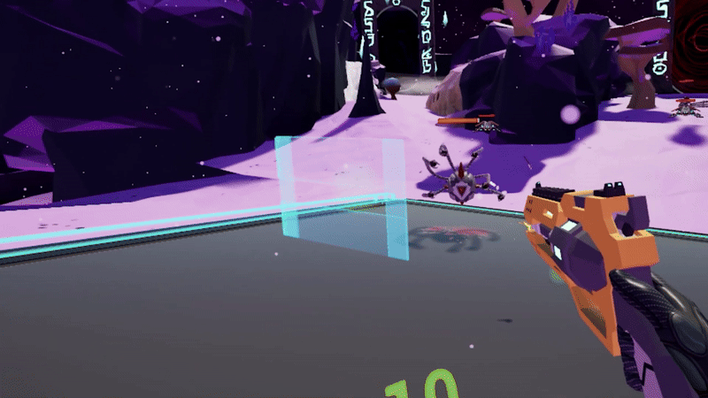
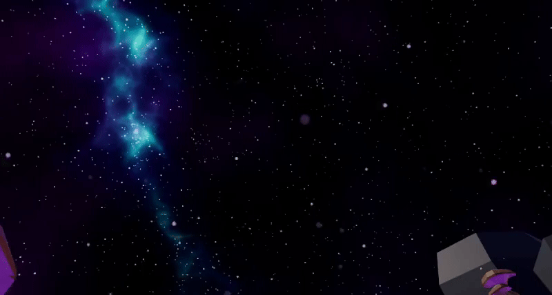
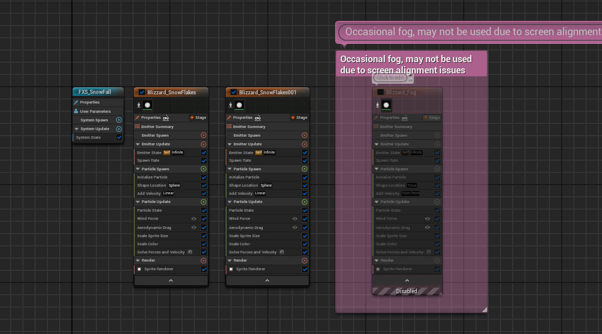

Rift Guardian
This is an Unreal Engine project I did back in my second year at Media College Amsterdam. Since this was an older project, I struggled getting some of my old work and finding it.
I did my best to gather the recources though. This was a project of half a school year, which is about 4 to 5 months. Along with that, this was my first time EVER using Unreal Engine
There was a lot of learning for me in this project. A big part of this project was spent helping other people.
Languages: UE Blueprints
Time Spent: 4 - 5 months
Programs: Unreal Engine
People: 22
Trailer
Subtitle

The first period I spent my time figuring out how to make an enemy AI. Turns out, the AI movement was one of the simplest parts. I made the enemy behaviour using Behaviour Trees
and a nav mesh. Figuring out how to properly understand a behaviour tree took me a good while.
Initially, It was only the movement function, but as the game progressed in it's development, more functionalities got added. So, the original picture of the behaviour tree
is nowhere to be found.
Basically how it worked:
The behaviour tree would start a sequence between move to and wait, checking how far away it is from the player. Once the enemy was a certain distance away
from the player, it would start attacking the player. In the script shown below this block of text, you can see how the enemy did that. The take damage event was created
by gino inside of the player's health system. The enemy has a standard damage it does assigned to it inside of the base.
For applying the system gino made to the enemy, we took the enemy as the target of the node, and applied the damage variable. Because you could barely see if the enemy got damaged or not back then, we added a blood decal to indicate the enemy taking damage. That eventually changed into me making a damage indicator widget.
Damage Indicator

Since there was a lack of visual signs, I decided to add damage numbers inspired by the ones you see in Genshin Impact. I did this with a widget that has a text with an animation
on it. First things first, instantiating the numbers. When seeing those beautiful numbers appear on your screen to give you that feeling of triumph, they ofcourse have to be
the correct numbers.
First thing we do is decide how long the damage numbers will be visible. We decided on four seconds as that gives the animaiton enough time to play out, and the player has enough time to see it. To get to setting the text, we cast to the WBP_DamageNumber from the widget component on our current actor. There, we call the event "UpdateDamageText"
The damage is the damage variable that is stored inside this script, which will be set depending on the weapon. From the event, we set the text in the widget itsself, and play the animation that makes the text float up.
I added a small quality of life feature where the widget will face you at all times. All we do in this script is we grab the location of the damage indicator widget, and the player camera. After that, we call the node Find look at rotation, which will give us a new rotation based on where the target, which in this case is the player is.
The value of that function is then given to the "SetWorldRotation" in event tick. That means that the rotation of the damage indicator will be set every frame based on where the player is now.
Snow Particle

The last thing I was able to make in this project was a snow particle. I thought that since there was snow on the floor, there should also be a snow particle So i got to work. The Blizzard_SnowFlakes system creates an endless flurry of snowflakes using a CPU-based emitter. Snowflakes spawn from a spherical area, each initialized with size, color, and a bit of linear velocity to get them moving. As they fall, they're influenced by forces like wind and drag, subtly shifting their path to feel more natural. Over time, their size and color can change, and all of this is updated each frame to simulate the soft, swirling motion of a winter storm. Finally, the snowflakes are rendered as simple 2D sprites, completing the blizzard effect.

I made two of the same particle systems, one with the normal size, and one with bigger snow particles to give the effect of the snow falling closer and further away from the player. Just like the rain in minecraft only loads in one chunk to save performance, the snow particles actually are only initiated around the player and a small distance away from them.
Reflection
In this period, I learned a lot and I managed to expand my knowledge about Unreal Engine, Blueprints, teamwork and scrum by a lot. It was a different experience from an usual school day and gave us a small peek into what it's like in an actual company. Looking back, there is stuff i would do different now. But I can take that, and apply that in my future projects, and improve even more.